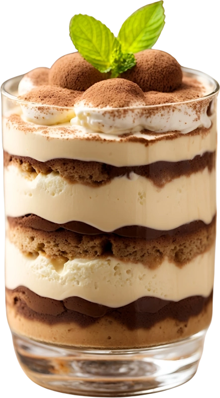

Tradiční recepty
U nás si každý najde to své, ať už preferuje klasické chutě nebo rád zkouší něco nového.
U nás
chutná
život
sladce
Tradiční recepty
U nás si každý najde to své, ať už preferuje klasické chutě nebo rád zkouší něco nového.
Kvalitní suroviny
Všechny naše sladké dobroty pečeme s láskou a péčí z těch nejkvalitnějších surovin.
Catering firemních akcí
Nabízíme širokou škálu sladkých specialit, které potěší kolegy i klienty a zpříjemní vaši akci.
Adam
⭐⭐⭐⭐⭐
Dortíčky? Mňam! Čerstvé ovoce a belgická čokoláda, to je prostě paráda. A ten výběr! Dorty, zákusky, koláče, pralinky... Milá a ochotná obsluha mi s úsměvem poradila s výběrem. A to prostředí! Moderní a útulné, ideální pro posezení s přáteli. Bylo to jako vaření z čarovného pytlíku...
Sofie
⭐⭐⭐⭐
Dortíčky s čerstvým ovocem a lahodnou čokoládou lákají oči a roztančí chuťové pohárky. Milá paní s úsměvem poradí a pomůže vám vybrat ten pravý kousek sladkého štěstí. Útulné prostředí cukrárny vybízí k posezení s kamarádkami a sdílení sladkých tajemství. Každé sousto je sladká symfonie chutí a vůní.
Levandulovy dortík
Tento okouzlující dortík je pastvou pro oči i chuťové pohárky. Jemný fialový korpus s lehkou vanilkovou příchutí se snoubí s nadýchanou krémovou vrstvou s bílou čokolády a lahodným malinovým želé. Dortík zdobí křupavé crumble z kakaových sušenek a svěží maliny, které dodávají celému dezertu neodolatelnou chuťovou harmonii.
Prohlédnout další